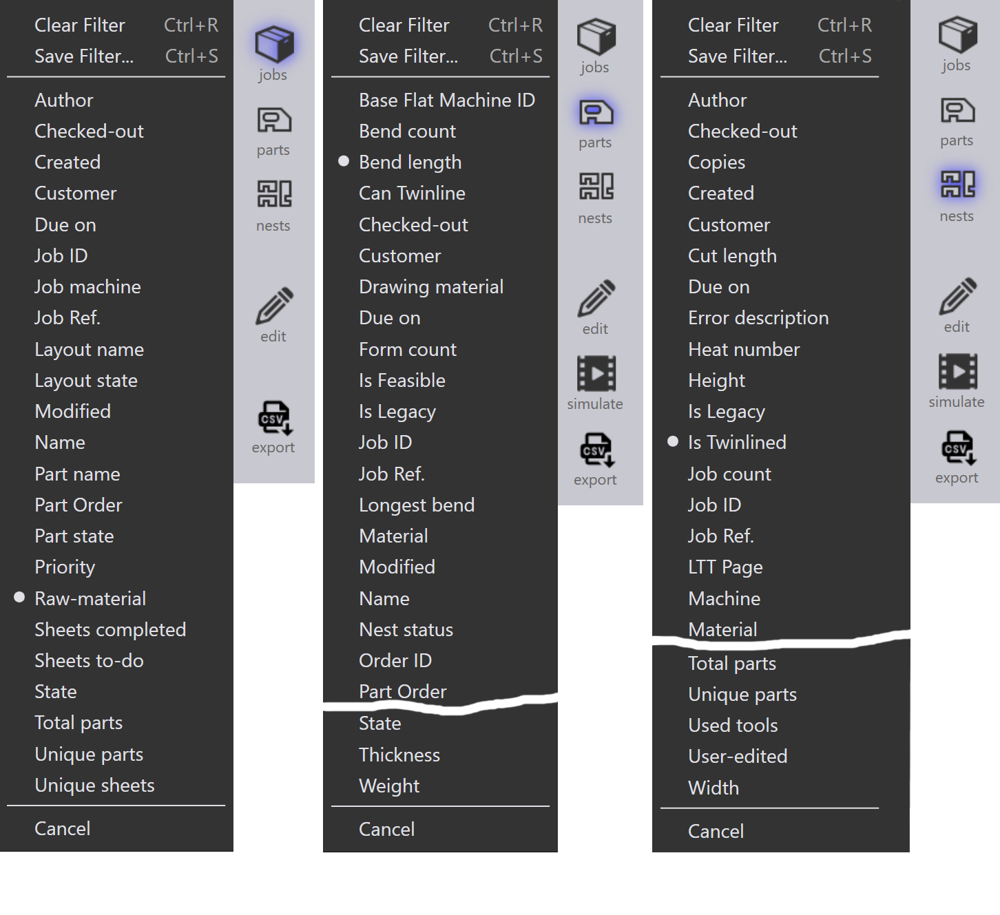

Filtri lavoro
I filtri della pagina Lavori aiutano a localizzare lavori, pezzi attivi e nesting visualizzando solo gli elementi che corrispondono alle condizioni selezionate. Semplificano la ricerca, l’ordinamento e la gestione dei lavori o dei pezzi, migliorando l’efficienza complessiva del flusso di lavoro.

Esempi dei filtri disponibili
Priorità e Scadenza
-
Il filtro Priorità consente di cercare e visualizzare pezzi o lavori in base alla loro priorità assegnata (Urgente, Alto, Basso, Normale).
-
Quando si seleziona un particolare livello di priorità, verranno evidenziati o mostrati nei risultati solo i pezzi con quella specifica priorità.
-
Ad esempio, se si sceglie la priorità Alto, il sistema filtrerà ed evidenzierà solo i pezzi contrassegnati come Alta priorità sul nesting.

-
Il filtro Scadenza consente di cercare e visualizzare pezzi o lavori in base alle date assegnate.
-
Quando si seleziona una particolare data di scadenza, verranno evidenziati o mostrati nei risultati solo i pezzi con quella specifica data di scadenza.
-
Oltre ai filtri predefiniti per le date di scadenza come Oggi, Ieri, Domani ecc., è anche possibile inserire valori/intervalli di date personalizzati nel formato yymmdd nella casella di ricerca testuale.
-
È possibile utilizzare anche espressioni con operatori di disuguaglianza (<, <=, >, >=, =) seguite dal valore della data. Esempio: >=250901 cercherebbe tutti gli elementi con scadenza il 1° settembre 2025 o successiva.

| Se l’elenco dei filtri nasconde il contenuto della ricerca, è possibile renderlo trasparente utilizzando il comando Commuta l’opacità|*Clic destro del mouse* . |
Nome pezzo/ Layout name
-
Il filtro Nome pezzo sarà disponibile nella pagina lavori e nesting.
-
Mentre si digita il nome del pezzo, viene visualizzato un elenco di suggerimenti per aiutare a selezionare rapidamente il pezzo corretto.
-
Selezionando uno o più elementi dall’elenco dei suggerimenti, i risultati della ricerca vengono ristretti solo ai pezzi selezionati.
-
Nella pagina Lavori, questo comportamento viene esteso per includere i nomi dei layout, consentendo agli utenti di cercare per nome pezzo o nome layout.

Residuo
-
Utilizzare il filtro Residuo per cercare layout in base alla disponibilità di ritagli.
-
Il menu a discesa visualizza le seguenti opzioni:
-
Nessun residuo - elenca i layout in cui non viene creato alcun ritaglio.
-
Uscite - elenca i layout in cui esiste già un ritaglio.
-
Aggiunto - elenca i layout in cui viene aggiunto un nuovo ritaglio.
-
-
Aiuta a identificare e gestire in modo efficiente i materiali residui dei fogli.